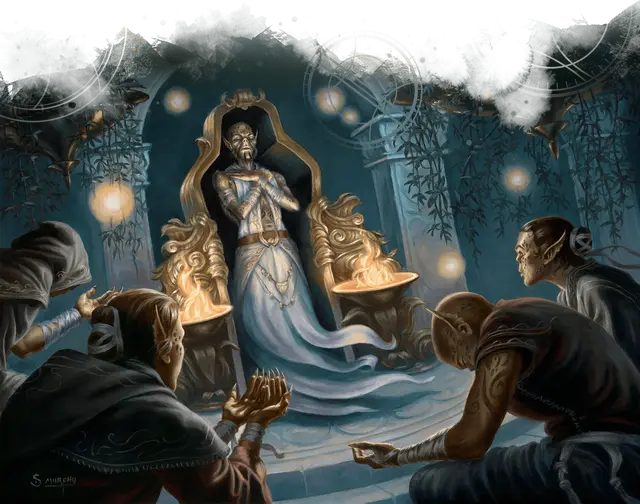

Гитцерай
Githzerai

Гитцераи мигрировали в Вечно бурлящий хаос Лимбо после древнего раскола, который отделил их предков от их двоюродных братьев, гитьянок. Лимбо - это бурлящий водоворот материи и энергии, разрушающийся и преобразующийся без цели или направления, пока существо не проявит сознательную волю, чтобы стабилизировать его. Благодаря своей мощной псионической силе гитцераи построили себе дом среди хаоса. Шли века, исследователи гитцераи путешествовали по другим планам и мирам мультивселенной.
Гитцераи, как правило стройны, с пятнистой кожей желтых, зеленых или коричневых оттенков. Эоны совершенствования своих ментальных способностей в бесконечном хаосе Лимбо наделили гитцераев способностью преобразовывать псионическую энергию, для собственной защиты и исследования разумов.
Особенность гитцерая
Вы обладаете следующими особенностями.
Увеличение характеристик. Либо значение одной характеристики по вашему выбору увеличивается на 2, а другой — на 1, либо значение трёх различных характеристик по вашему выбору увеличивается на 1.
Скорость. Ваша базовая скорость ходьбы — 30 футов.
Вид существа. Вы — Гуманоид.
Размер. Ваш размер — Средний.
Псионика гитцераев. Начиная с 3-го уровня, вы можете накладывать заклинание щит [shield] с помощью этой особенности. Начиная с 5-го уровня, вы также можете накладывать заклинание обнаружение мыслей [detect thoughts] с помощью этой особенности. После накладывания одного из этих заклинаний с помощью особенности вы должны закончить продолжительный отдых, прежде чем сможете вновь наложить это заклинание таким образом. Вы также можете накладывать эти заклинания, используя ячейки заклинаний подходящего уровня.
Кроме того, вы знаете заговор волшебная рука [mage hand], и рука наложенная при помощи этой особенности, невидима.
Интеллект, Мудрость или Харизма является вашей базовой характеристикой для этих заклинаний (выберите одну из них при выборе этой расы). Ни одно из этих заклинаний не требует материальных компонентов, когда вы накладываете их с помощью этой особенности.
Ментальная дисциплина. Ваша врождённая психическая защита дарует вам преимущество на спасброски для того чтобы избежать или окончить на себе состояние очарован и испуган.
Сопротивление психической энергии. Вы обладаете сопротивлением урону психической энергией.
Языки. Ваш персонаж может говорить, читать и писать на Общем и ещё одном языке, который по вашему мнению подходит для персонажа.